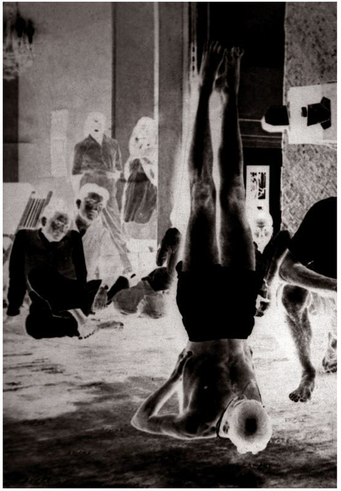
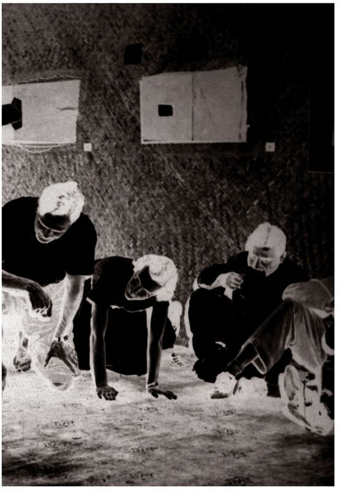

While not an actual asana, Uth Pluthi is nevertheless highly beneficial.
METHOD
At the conclusion of Padmasana and without releasing the legs, press the hands firmly on the floor on either sides of the thighs and, on the force of the hands alone, lift the body up off the floor and hold, remaining in this position and doing rechaka and puraka fully as much as possible. The arms, spine, and neck should be kept completely straight, the chin tilted down a little, and the gaze should be directed on the tip of the nose. Then, jump back into the 4th vinyasa of the first Surya Namaskara and follow the vinyasas described in earlier asanas. Finally, jump through the arms, lie down, and rest for five minutes. This concludes the practice.
BENEFITS
Uth Pluthi is useful for strengthening the waist and perfecting abdominal and anal control. The three granthis, located in the sacrum, gradually open completely.
THE ASANAS DETAILED TO THIS POINT, WHICH ARE CURATIVE IN NATURE, HAVE now been described as completely as possible. They commonly belong to that part of the yoga method called roga [disease] chikitsa, which is useful for the cure of diseases. Of the asanas of the second series, which is not described in this book, some belong to roga chikitsa and others are shodaka, or purificatory. A number of the asanas of the third series, which also is not described here, are also purificatory, while others are capable of destroying terrible diseases, or have the power to maintain the body’s firmness. The asanas reviewed in this book, such as Sarvangasana, Halasana, Karnapidasana, Urdhva Padmasana, Pindasana, Matsyasana, Uttana Padasana, Shirshasana, and Padmasana, should only be practiced after the other asanas have been completed. After these nine asanas, no further asanas should be done. (Those who do only a limited number of asanas daily should be sure to include these nine in their regimen.) If aspirants heed this advice and carefully practice the asanas described above, then they will have the means to prosperity, both material and spiritual.

